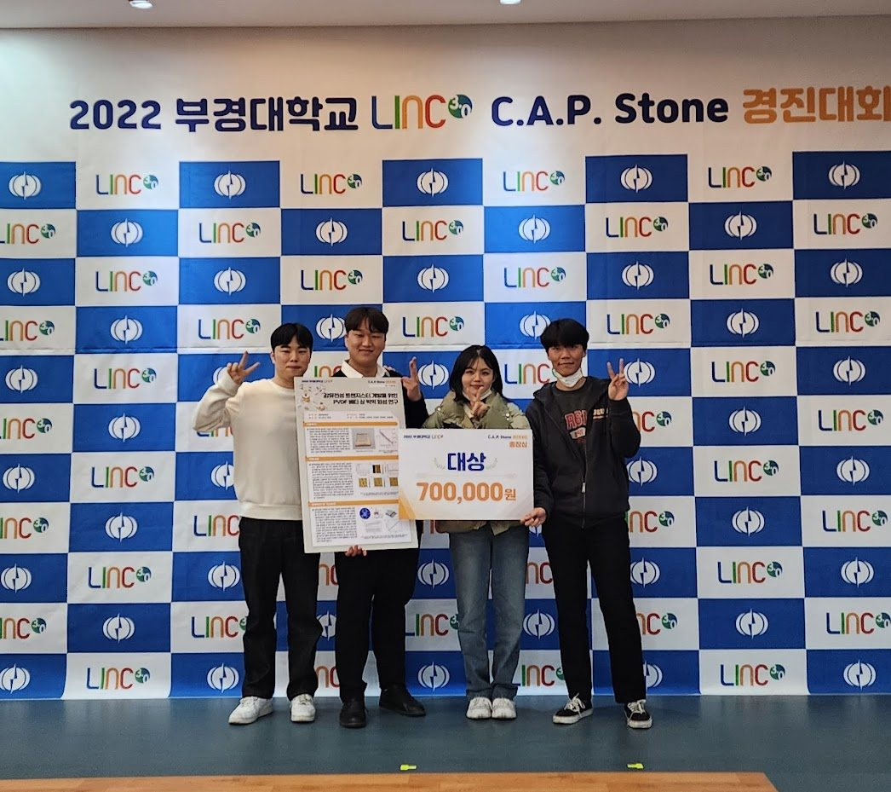
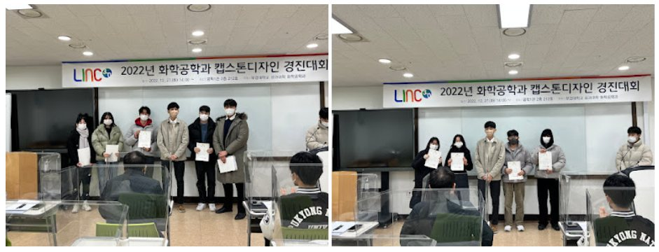

2026.07.01
Seong Bin Woo started his career at SK hynix. Congratulations!
2026.06.29
Seo Hyun Joo, Ye Seul Lee, Uk Jin Lee, DA Yeong Kim, Han Byul Choi, Hae Chan Jeong, HyeonSeong Yun, Hwa Si Hyun, and Eun Chae Cho joined NIE LAB. Big welcome!
2026.06.23
Our paper "Near-Infrared Light-Sensitive Photoneuromorphic Organic Field-Effect Transistors With Quantum Dot-Functionalized Dielectric Layer" was published in Adv. Mater. Technol. Congratulations!
2026.06.03
Our paper "Micelle-Guided Ion Pathways and Graded Polymer Cross-Linking for Reliable Filament Growth in Organic Memristors" was published in Adv. Mater. Technol. Congratulations!
2026.05.01
Our paper "Confinement at Defect Sites Dissociates Ionic-Liquid Pairs for Brain-Like Organic Computing" was published in Small. Congratulations!
2026.04.21
Our paper "A Highly Light-Responsive Detachable Photosensor with Integrated Semiconductor-Electrolyte Layers for Enhanced Photoresponse" was published in ACS Applied Materials & Interfaces. Congratulations!
2026.03.23
Our paper "Zwitterion-Modified PMMA Interlayers for Reliable Dual-Mode Organic Neuromorphic Devices" was published in ACS Applied Materials & Interfaces. Congratulations!
2026.03.21
Our paper "Adaptive VOC detection with alcohol dehydrogenase-integrated gelatin transistors" was published in Synthetic Metals. Congratulations!
2026.03.19
Our paper "Simple fabrication of PEDOT: PSS-based microfiber organic electrochemical transistors for neuromorphic memory applications" was published in Macromolecular Research. Congratulations!
2026.03.19
Our paper "Enhanced near-infrared photonic synaptic devices for unimodal associative learning via PVDF-HFP trap effects and IEICO-4F sensitization" was published in Materials Science in Semiconductor Processing. Congratulations!
2026.03.10
Our paper "Surface dipole chaos: Mixed SAM-engineered Bi2S3 for unclonable hardware security" was published in Journal of Alloys and Compounds. Congratulations!
2026.03.10
Our paper "Mechanistic elucidation of solution-processable n-type doping via rhodamine B for photoresponsive neuromorphic organic semiconductors" was published in Macromolecular Research. Congratulations!
2026.03.05
Our paper "Schottky Barrier Engineering in n -Type Organic Source-Gated Transistors Enabling High Conductance" was published in Adv. Mater. Technol. Congratulations!
2026.02.11
Chang Min Lee moved on to graduate school at KAIST. Congratulations!
2026.02.02
Our paper "Organic neuromorphic electronics powering intelligent sensory and edge computing systems" was published in InfoMat. Congratulations!
2026.01.08
Our paper "Beyond Sight: Neuromorphic Synapses Triggered by Invisible Light" was published in Small. Congratulations!
2026.01.01
Ji Hee Park and Su Yeon Oh joined NIE LAB. Big welcome!
2025.11.17
Our paper "Highly aligned polymer nanowire-based fin architecture for enhanced functionality of organic electrochemical transistors in neuromorphic computing" was published in Journal of Materials Chemistry C. Congratulations!
2025.10.14
Our paper "Aligned conjugated polymer nanowires for enhanced performance in organic transistors and neuromorphic devices" was published in Nanoscale. Congratulations!
2025.10.13
Our paper "Zwitterionic Fluoropolymer-Engineered Synaptic Clefts Enhance Ion Dynamics in Neuromorphic OECTs" was published in Adv. Mater. Technol. Congratulations!
2025.09.25
Our paper "Over 1011-fold variability for a base-12 PUF using particle-damaged graphene" was published in Device. Congratulations!
2025.08.07
Our paper "Enhanced Photocurrent of Electrodeposited Copper Oxide Films Doped with Solution-Processable Organic Cationic Dye as a Dopant" was published in Korean Journal of Chemical Engineering. Congratulations!
2025.07.21
Our paper "Tailored phase separation in P3HT:PS blends for enhanced synaptic performance in organic electrochemical transistors" was published in Synthetic Metals. Congratulations!
2025.07.15
Our paper "Kinetic swelling-driven PTG interlayers for enhanced crystallinity and charge transport in polymer OECTs" was published in Journal of Materials Chemistry C. Congratulations!
2025.07.11
Our paper "Improved neuromorphic functionality in organic electrochemical transistors using crosslinked-polyvinyl alcohol for fast ion transport and its application to Pavlovian transistors" was published in Journal of Materials Chemistry C. Congratulations!
2025.07.01
Ji Hun Park and Dong Hyun Jeong joined NIE LAB. Big welcome!
2025.06.27
Our paper "Detachable and Reusable: Reinforced π-Ion Film for Modular Synaptic Reservoir Computing" was published in Advanced Materials. Congratulations!
2025.06.25
Our paper "Heterojunction-Driven Stochasticity: Bi-Heterojunction Noise-Enhanced Negative Transconductance Transistor in Image Generation" was published in Advanced Materials. Congratulations!
2025.06.23
Our paper "Visible-Light-Responsive Organic Synaptic Devices Based on Rhodamine B-Doped Source-Gated Transistors" was published in ACS Applied Materials & Interfaces. Congratulations!
2025.06.06
Our paper "Highly Efficient n-Type Doped Single-Crystalline Perylene Diimide Microwires via Solution Processing for High-Performance Photosensors and Photo-Neuromorphic Devices" was published in Adv. Mater. Technol. Congratulations!
2025.04.09
Our paper "Preparation of polyurethane sulfonate films as a motion sensing substrate with the compliant coating of PEDOT:PSS" was published in Macromolecular Research. Congratulations!
2025.02.28
Gyu Won Woo moved on to graduate school at UNIST. Congratulations!
2025.01.01
Minseo Park, Soo Hyun Lee, and Ji Eun Seo joined NIE LAB. Big welcome!
2025
Our paper "Fabrication of High-performance Organic Internal Gated Transistor Using Screen Printing Technique." was published in Applied Chemistry for Engineering 36, 36–42(2025). DOI: 10.14478/ace.2024.1084. Congratulations!
2024.12.03
Our paper "A Self-powered Kinetic Motion Sensor Fabricated from Electrospun MOF-5/PVDF-TrFE Composites Piezoelectric Nanogenerators" was published in Macromolecular Research. Congratulations!
2024.11.22
Our paper "Ultraviolet Photodetector Fabrication with Low-Power Dissipation Based on Organic Suboptimal Source-Gated Transistor Architecture and MoO3-Doped Pentacene" was published in Small. Congratulations!
2024.11.16
Our paper "High-Performance Synaptic Devices Based on Cross-linked Organic Electrochemical Transistors with Dual Ion Gel" was published in Advanced Functional Materials. Congratulations!
2024.11.12
Our paper "Enhancement of Synaptic Behavior in Organic Electrochemical Transistors via the Introduction of Layer-by-Layer Grown Metal-Organic Framework" was published in Adv. Mater. Technol. Congratulations!
2024.10.17
Our paper "Controlling Long-Term Plasticity in Neuromorphic Computing Through Modulation of Ferroelectric Polarization" was published in ACS Applied Materials & Interfaces. Congratulations!
2024.09.16
Our paper "Enhancing Stability of n-Type Doped Organic Semiconductors through Low Boiling Point Solvent-Assisted Room Temperature Drying" was published in ACS Applied Materials & Interfaces. Congratulations!
2024.09.01
Dr. YongHee Kim joined NIE LAB as a research professor. Big welcome!
2024.08.13
Sung-moon Park moved on to graduate school at UNIST. Congratulations!
2024.08.08
Our paper "Hybrid amphiphilic janus PDMS sponge enabling electrical sensing of organic solvents" was published in Sensors and Actuators A: Physical. Congratulations!
2024.08.08
Our paper "n-Type Doping Effect of Anthracene-Based Cationic Dyes in Organic Electronics" was published in ACS Applied Materials & Interfaces. Congratulations!
2024.08.01
Our paper "Organic Electrochemical Transistors with Microporous Structures via Phase-Separation for Enhancing Long-Term Plasticity in Artificial Synapses" was published in Adv. Mater. Technol. Congratulations!
2024.07.26
Seong Bin Woo, SeungHwan Chung, Han Na Kim, Seung Hwan Song, and Gaeun Lim joined NIE LAB. Big welcome!
2024.07.12
Our paper "PEDOT:PSS-Based Prolonged Long-Term Decay Synaptic OECT with Proton-Permeable Material, Nafion" was published in Macromolecular Rapid Communications. Congratulations!
2024.05.27
Our paper "Enhanced synaptic behavior of neuromorphic device based on organic electrochemical transistors by adding Aminosilane" was published in Organic Electronics. Congratulations!
2024.03.07
Our paper "Strengthening Multi-Factor Authentication Through Physically Unclonable Functions in PVDF-HFP-Phase-Dependent a-IGZO Thin-Film Transistors" was published in Advanced Science. Congratulations!
2024.02.14
Da Eun Lee, Dae-Hee Kim, Seon Yeong Lee, Min Je Oh, Chae Min Park, Huisu Yang, and Yea Ji Lee graduated. Huisu Yang joined Samsung Electronics. Congratulations!
2024.01.31
Our paper "Light-Triggerable and Gate-Tunable Negative Differential Resistance in Small Molecules Heterojunction" was published in Nano Letters. Congratulations!
2024.01.02
Our paper "A flexible transparent graphene/metal–organic framework complex hybrid chemical sensor for highly sensitive ethanol detection" was published in EcoMat. Congratulations!
2024
Our paper "Fabrication of a Moldable, Long-Term Stable, High-Performance Conductive Hydrogel Composed of Biocompatible Materials." was published in Applied Chemistry for Engineering 35, 390–398(2024). DOI: 10.14478/ace.2024.1044. Congratulations!
2023.12.26
Seung Min Lee and Gyu Won Woo joined NIE LAB. Big welcome!
2023.10.19
Our paper "Overcoming Downscaling Limitations in Organic Semiconductors: Strategies and Progress" was published in Small. Congratulations!
2023.09.26
Our paper "Hardware-based security devices using a physical unclonable function created by the irregular grain boundaries found in perovskite calcium titanate" was published in Journal of Alloys and Compounds. Congratulations!
2023.06.26
Chang Min Lee, Min Ju Jeong, and Hye Won Lee joined NIE LAB. Big welcome!
2023.05.27
Our paper "Interconnection Technologies for Flexible Electronics: Materials, Fabrications, and Applications" was published in Micromachines. Congratulations!
2023.04.12
Yeon Seok Suh started his career at Samsung Electronics. Congratulations!
2023.03.06
Huisu Yang, So Jeong An, Jongu Kim, Hyun Ji Lee, and Min Jung Kim joined NIE LAB. Big welcome!
2023.02.09
Team Park from NIE LAB member received a grand prize at 2022 Capstone design competition at PKNU. Congratulations!

2022.12.27
Two teams from NIE LAB member received the best presentation award at 2022 Capstone design class at PKNU Chemical engineering. Congratulations!

2022.12.21
Da Eun Lee, So Yeong Park, Yu Jin Kwak, Dae-Hee Kim, Seon Yeong Lee, Min Je Oh, Yea Ji Lee joined NIE LAB. Big welcome!
2022.06.23
Yeon Seok Suh, Sung-moon Park, Chae Min Park, Jung-Hye Song, Jin Woo Oh joined NIE LAB. Big welcome!
2022.03.01
NIE (Nano-interface electronics) Lab kicked off !!
2016.06.14
UNIST, 전기 통하는 고분자 2차원 ‘면’으로 제작 성공
http://www.ujnews.co.kr/news/articleView.html?idxno=255225
백종범 UNIST 교수팀, 원자 수준 '2차원 폴리아닐린' 개발
http://www.ajunews.com/view/20160614102914010
UNIST, 고분자 전자제품 생산 앞당겨
http://www.veritas-a.com/news/articleView.html?idxno=59687
백종범 UNIST 교수팀, 전도성 고분자 `2차원 폴리아닐린` 개발
http://www.etnews.com/20160614000512
2012.05.02
Beneficiery of Global Ph.D. Fellowship funded by National Research Foundation in Korea
http://sls.unist.ac.kr/ko/board/view.asp?part=N2&seq=705&page=6&pSTR=&CATE=5